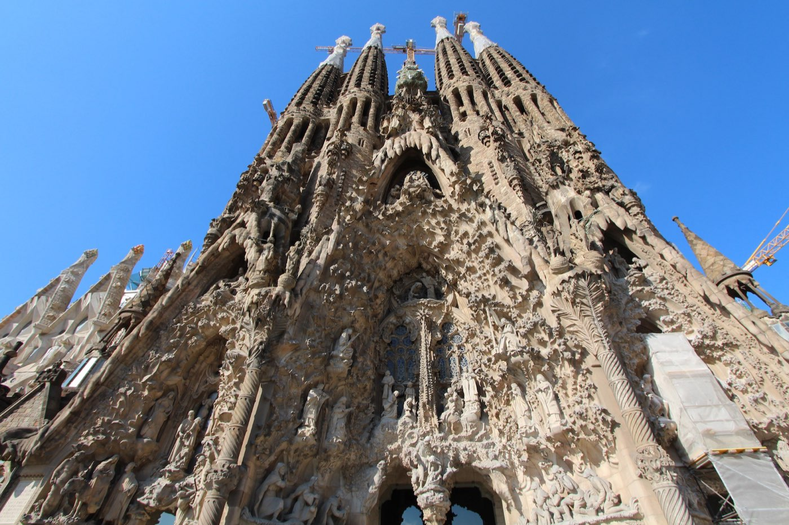
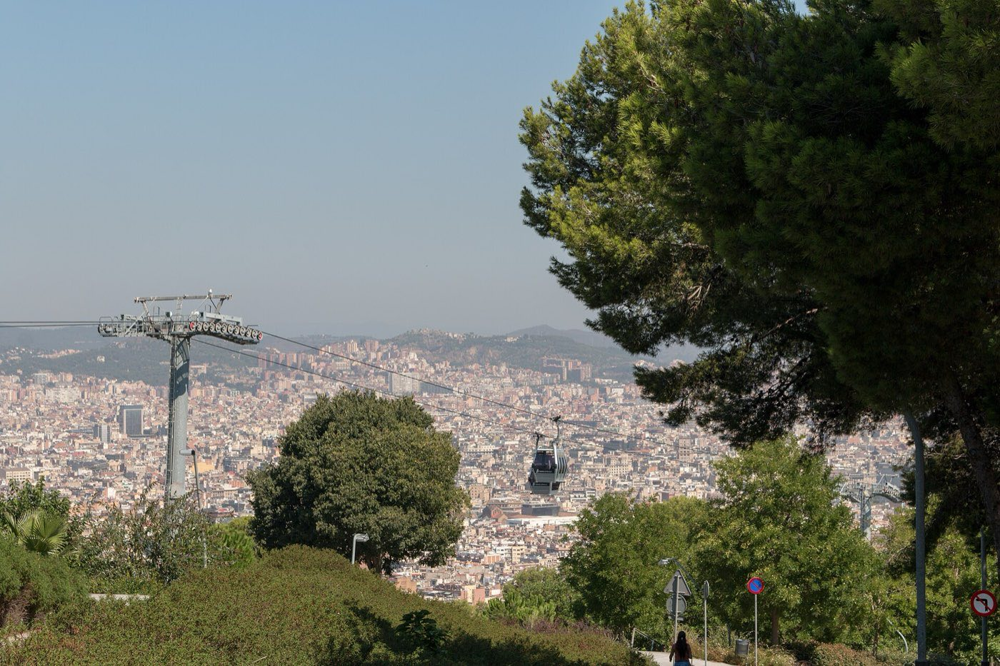
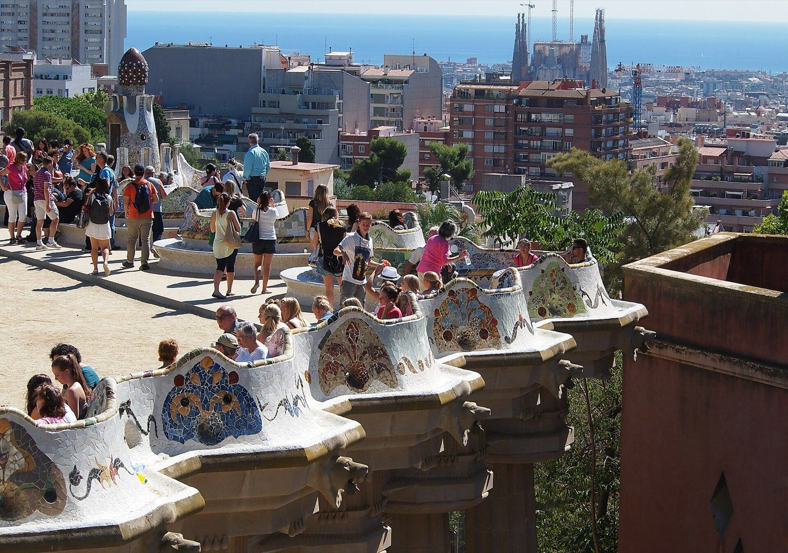

Barcelona · 3 days
3 Days in Barcelona: What You Actually Have to See
Three days in Barcelona splits along one line: flat ground and one hill. Sagrada Família, Casa Batlló and Casa Milà sit in the Eixample's grid; Park Güell alone requires a real climb. Here's the order that keeps the climbing to one morning, and why Montjuïc, the city's other hill, doesn't make this itinerary.

Three days in Barcelona comes down to flat ground and one hill. Sagrada Família, Casa Batlló and Casa Milà sit inside the Eixample's grid, an easy walk between them with nothing to climb. The Gothic Quarter, El Born and the beach at Barceloneta hold to the same flat logic at sea level, on the far side of the old town. Park Güell breaks the pattern: a Gaudí park built up a hillside in Gràcia, with no metro stop directly at the entrance, so reaching the Monumental Zone means a bus straight to the gate or an uphill walk assisted by public escalators. Give it a morning, then spend the rest of that day in the neighbourhood at its foot. Nothing else needs bolting on.
Barcelona has a second hill. Montjuïc, with its own funicular and cable car, sits on the opposite side of the city from Park Güell, twenty-seven minutes away by metro. Fitting both hills into one trip means either rushing one of them or losing half a day to the crossing between them, and three days doesn't leave room for that. This itinerary climbs the hill that can't be skipped and leaves Montjuïc for a trip with a fourth day.
One hill, not two. Park Güell is the single elevated must-see in three days in Barcelona, reached by a direct bus or an escalator-assisted climb from the flat streets of Gràcia below. Montjuïc, the city's other hill, sits twenty-seven minutes away by metro on the opposite side of town and doesn't fit alongside it. Climb Park Güell once, spend the rest of that day in Gràcia, and save Montjuïc for a longer trip.
Day 1 — Eixample: Sagrada Família, Casa Batlló and Casa Milà
Book Sagrada Família as soon as your dates are fixed. The window runs up to two months ahead, and that full window isn't a real cushion in high season: from May to September, morning slots commonly sell out ten to fourteen days before the visit date, and tickets that include tower access go faster still, often gone around three weeks out. Go early, before the heat and the queues build, and budget close to two hours inside if the towers are part of your ticket.
Casa Batlló and Casa Milà sit a few blocks apart on Passeig de Gràcia, an easy add-on to the same afternoon as Sagrada Família. Both run timed entry with their own separate booking windows, and the same high-season pressure applies: the 10am to 1pm slots and weekend dates are the first to go, sometimes weeks ahead. Casa Batlló is the more theatrical of the two inside, built around Gaudí's marine imagery. Casa Milà trades some of that drama for a rooftop of sculptural chimneys that photographs best in late afternoon light. Seeing both in one day is realistic; seeing both slowly is not, so pick one to linger in and treat the other as a shorter stop.
The must-sees
All within the Eixample's grid, nothing here requires a climb.
Day 2 — Park Güell and Gràcia, the one hill in this itinerary
Skip the closest metro stops. Vallcarca and Lesseps both leave a fifteen-to-twenty-five-minute uphill walk to the Monumental Zone entrance, steep enough that the city built public escalators along part of the route. Bus 24 from Passeig de Gràcia solves this directly: it stops right at the entrance, no climb required. Book the timed ticket before you go. Entry runs in thirty-minute windows with no grace period, arrive after yours closes and the ticket is void, and in summer availability tightens days in advance.
Montjuïc, the other hill, is visible from parts of Park Güell and reachable by its own funicular and cable car, but it sits on the far side of the city, twenty-seven minutes away by metro. The National Art Museum, the Joan Miró Foundation and the castle up there are each worth a full visit on their own terms. Three days doesn't have a slot for a second hill; this itinerary spends its one uphill morning at Park Güell and leaves Montjuïc for whenever there's a fourth day.

The must-sees
One climb, then everything else on this day is flat again.

Day 3 — The old town and the beach: Barri Gòtic, El Born and Barceloneta
Nothing on the third day needs booking weeks out, which after two days of timed tickets is a real change of pace. The one schedule to work around is La Boqueria: Barcelona's best-known food market runs Monday to Saturday and closes completely on Sundays, so save it for whichever of your three days isn't a Sunday. Go before midday if you want the stalls at their fullest; several close as early as mid-afternoon.
The Barri Gòtic and El Born sit next to each other, both flat, both built for walking without a plan. The Picasso Museum, in El Born, is the one thing worth booking ahead here: standard tickets are timed too, and the free slots, Thursday evenings and the first Sunday of the month, get booked out within days of being released. The museum is also closed Mondays, worth checking against your dates before building an afternoon around it.
Barceloneta is a fifteen-minute walk from El Born and needs no ticket at all, the one stop on this itinerary with nothing to book. Go in the late afternoon once the museum crowds have thinned, and stay into the early evening; the beach empties out for dinner well before the old town does.
The must-sees
Flat, unticketed and forgiving of a loose schedule, except for the market's closing day.
What to book, and how far ahead
| What | Booking window | So |
|---|---|---|
| Sagrada Família | Opens roughly 2 months ahead | High-season morning slots often gone 10–14 days out; tower access sooner |
| Casa Batlló & Casa Milà | Separate windows, often weeks ahead | 10am–1pm and weekend slots go first |
| Park Güell (Monumental Zone) | Opens roughly 3 months ahead | 30-minute entry windows with no grace period; summer trims availability days out |
| La Boqueria | No booking, but closed Sundays | Plan the visit for any day but Sunday |
| Picasso Museum | Standard ticket anytime; free slots released ~4 days ahead | Free evening and first-Sunday slots go fast once released |
How much time each sight actually takes
| Sight | Minimum time | Note |
|---|---|---|
| Sagrada Família | 1.5–2 hours | Longer with tower access |
| Casa Batlló or Casa Milà | 1–1.5 hours each | Doing both slowly in one day is tight |
| Park Güell (Monumental Zone) | 1–1.5 hours | The paid zone is compact; the free outer park is much bigger |
| Picasso Museum | 1.5–2 hours | More with a temporary exhibition included |
| Barri Gòtic on foot | 2+ hours | No fixed length; expands to fill the time given |
What three days does not cover
Cutting deliberately beats rushing. These need more time than a three-day trip has:
- Montjuïc — the city's other hill, with the National Art Museum, the Joan Miró Foundation and the castle. Each deserves its own half-day rather than a rushed add-on to a morning already spent at Park Güell.
- Camp Nou — a stadium tour on the far side of the city from everything else in this itinerary, and a half-day commitment on its own.
- Montserrat — the mountain monastery outside the city is a full-day trip by train, not an afternoon detour.
- Casa Vicens and the Sagrada Família tower climb — both real and both skippable; add either only if one of the three days runs shorter than expected.
- Barceloneta beyond the beach — this itinerary gives it one evening. The harbour promenade and Poblenou further along the coast are a longer trip's worth of walking.
Common questions about 3 days in Barcelona
Is 3 days enough for Barcelona?
For the essentials, yes. Three days covers Sagrada Família, Casa Batlló and Casa Milà in the Eixample, Park Güell up in Gràcia, and the old town around the Barri Gòtic, El Born and Barceloneta beach. It doesn't stretch to Montjuïc, Camp Nou or a day trip to Montserrat. Each needs dedicated time of its own; none fits into a slot squeezed out of an already full day.
Should I see Sagrada Família or Park Güell first?
Either order works, since they fall on different days regardless. What matters more is booking both the moment your dates are fixed: Sagrada Família's window opens around two months out and tightens fast in high season, and Park Güell's opens around three months out with entry locked to a strict thirty-minute window.
How far in advance should I book Sagrada Família tickets?
The booking window opens roughly two months before the visit date, but don't treat that as a real cushion between May and September. Morning slots commonly sell out ten to fourteen days ahead in that stretch, and tickets that include tower access go even faster, often gone about three weeks out.
Is Montjuïc worth visiting in three days?
It's worth visiting, just not in three days alongside everything else. Montjuïc sits on the opposite side of the city from Park Güell, a twenty-seven-minute metro ride away, and the National Art Museum, the Joan Miró Foundation and the castle up there each deserve a proper visit, not a rushed afternoon tacked onto Park Güell. This itinerary spends its one hill-climbing day there instead and leaves Montjuïc for a longer trip.
Is La Boqueria market open on Sundays?
No. La Boqueria runs Monday to Saturday and closes completely on Sundays and public holidays, so build it into whichever of your three days isn't a Sunday. Go before midday for the fullest stalls; some close as early as mid-afternoon.
Do I need to book Park Güell tickets in advance?
Yes, for the Monumental Zone, the paid area with the mosaic terrace and the tiled bench. Entry runs in thirty-minute windows with no grace period, and in summer slots can tighten days ahead of a visit. The wider park around it is free and unticketed.
Is the Picasso Museum free?
Only at specific times: the first Sunday of the month and Thursday evenings, though the exact evening hours shift by season. Those free slots are released only a few days ahead and get booked quickly, so a standard paid ticket is the more reliable option if your dates don't line up.
Tailored to your trip
Travelling to Barcelona? Plan your trip around your real arrival and departure times.
Download iOS App